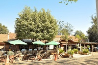

Comer no Rancho da Costela!

Um restaurante típico de fazenda. Além da consagrada costela "Mais Caminhos“, ofertam deliciosos
pratos, sobremesas, café premium e chopp de qualidade. Tudo isso em um ambiente campestre, sereno e
acolhedor. Em atividade desde 1996.
Conheça mais sobre o Rancho da Costela visitando sua página no Facebook.
Fazer um piquenique no Parque dos Ipês

Tanto no fim de tarde quanto aos finais de semana o Parque dos Ipês é sempre um bom local para
passar um tempo com a família.
Descubra mais sobre o Parque dos Ipês pesquisando no Google o local.
Caminhar no Caminho dos Flamboyants

Se exercitar é sempre algo recomendável, ainda mais se for em um local agradável e perto da
natureza.
Veja no mapa fica esse local.